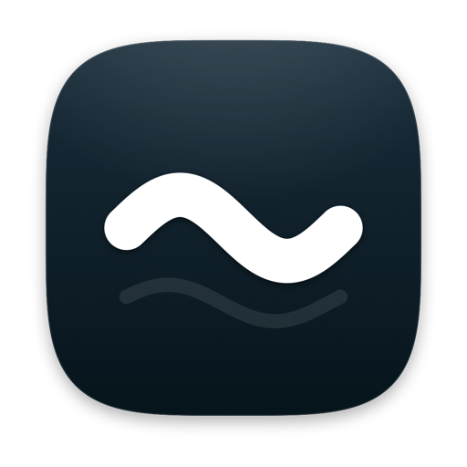

Brand kit
Ondi
Tus juegos, en tu Mac. Una biblioteca open source en azul medianoche, donde todo es redondo y todo se mueve como agua.
Ondi viene de onda: la onda que atraviesa el logo y el agua sobre la que flotan los juegos. Corto, suave y sin referencias a marcas de consolas.
Concepto
Agua a medianoche
Cuatro reglas que deciden cualquier duda de diseño.
Redondo siempre
Ninguna esquina viva. Las formas grandes son squircles (superelipses), las pequeñas son cápsulas o círculos.
Líquido
Nada aparece ni desaparece de golpe: fluye, se estira como una gota y se asienta con un rebote suave.
Un solo azul
Seis tonos de azul pizarra y blanco. Otros colores solo aparecen para avisar de un estado: listo, cuidado o error.
Honesto
Open source y legal: la app nunca trae ni descarga claves ni juegos. Cada persona usa sus propias copias.
Logo
Un squircle con una onda
Un cuadrado tan suave que no tiene esquinas, atravesado por una sola onda: la superficie del agua. La onda es lo único que nunca cambia.

Principal: medianoche sobre claro.
Invertido: sobre fondos oscuros.
Contorno: grabados, una sola tinta.
Ícono de macOS: medianoche brillante, con reflejo.
Construcción
Contorno: superelipse |x|⁴ + |y|⁴ = 1. Onda: un período de seno que empieza al 21,5 % del lado, sube y baja un 8,8 % y tiene un grosor del 11,8 %, con puntas redondas. Son los mismos números que usarían la app y el generador del ícono (LogoGeometry.swift).
Espacio y tamaños
Deja libre alrededor al menos un cuarto del lado (línea punteada). Mínimo 24 px en pantalla; por debajo, 16 px con la versión plana, sin brillo ni reflejo.
Usos incorrectos
No girarlo.
No ponerle color.
No volverlo cuadrado.
No estirarlo.
Color
De medianoche a niebla
Seis tonos de un mismo azul pizarra, como mirar el agua de la superficie al fondo. El más oscuro es el del logo y el texto; los claros son superficies y cristal. Paleta inspirada en @uiuxaadi.
Colores de estado
Solo en iconos y puntos de estado, nunca como decoración ni en fondos grandes.
Tipografía
SF Pro Rounded
La letra del sistema en su versión redondeada: viene con macOS, no hay que licenciarla y combina con la forma del logo. En la web: ui-rounded.
| Estilo | Muestra | Tamaño / peso |
|---|---|---|
| Display | Tu biblioteca | 34 · Heavy |
| Título | Listo para jugar | 24 · Bold |
| Encabezado | Calidad y FPS | 18 · Semibold |
| Cuerpo | Agrega la actualización probada para jugar a 60 fps. | 14 · Regular |
| Pie | Se guarda en la app del juego. | 12 · Regular |
| Etiqueta | Mandos conectados | 10,5 · Semibold · mayúsculas |
Forma
Nada con esquinas
Cuatro radios y la cápsula. Siempre esquinas “continuas” (la curva entra suave, como en los íconos de Apple), nunca un arco pegado a una recta.
S 14: teclas, miniaturas · M 20: tarjetas internas · L 28: paneles de cristal, portadas · XL 36: ventanas y hojas · Cápsula: botones, chips, selectores, barras.
Movimiento
Como agua, como algo que se derrite
Todo se mueve con resortes, nunca a velocidad constante: arranca con impulso, se pasa un poquito y se asienta despacio. Estas curvas son resortes reales calculados con los mismos números que usaría SwiftUI.
Líquido
Respuesta 0,52 s · amortiguación 0,74. Lo de todos los días: seleccionar, interruptores, pestañas, pasar el ratón.
Derretir
Respuesta 0,78 s · amortiguación 0,88. Para lo grande que entra o sale: se desenfoca, se hunde hacia abajo y se desvanece.
Gelatina
Respuesta 0,30 s · amortiguación 0,55. Al pulsar: el botón se aplasta y rebota, como al tocar gelatina.
Al volver, entra “goteando”: cae desde un poco más arriba, estirada, y se asienta.
Reglas
- Nada se mueve en línea recta ni a velocidad constante, salvo lo que fluye siempre (el brillo de una barra de progreso).
- Al moverse rápido, las cosas se estiran en la dirección del movimiento y se recuperan al llegar, como una gota.
- Lo que sale se derrite (desenfoque y caída). Lo que entra gotea. No hay cortes secos.
- El fondo respira: manchas de tinta que derivan cada 16 segundos, casi imperceptibles.
- Si el Mac tiene activado “Reducir movimiento”, todo se queda quieto y solo cambia la opacidad.
Inspiración y librerías
De dónde sale el movimiento
Lo que tomé de bencho.dev y las librerías que encajan con la app de Mac. Todo es open source y está mantenido; lo verifiqué el 3 de noviembre de 2026.
bencho.dev, adoptado en este kit
Es una librería de componentes React de Lorenzo Cabra con código MIT en github.com/cabralorenzo/bencho. Los valores salen de su código.
- Curvas: asentar
.22,1,.36,1· aparecer con rebote.24,1.34,.38,1· revelar texto.16,1,.3,1. - Resortes: 380 / 34 para la interfaz, 500 / 18 para lo juguetón. Tiempos: 160 · 220 · 420 · 600 ms.
- Cristal: blanco al 35–60 %, desenfoque 25 px, saturación 190 %, línea de luz arriba y borde con degradado a 142°.
- Texto que aparece: desenfoque 8 px → nítido, sube .3 em, 900 ms. Cascada: 70 ms entre elementos, máximo 9.
- Isla que se transforma, avisos apilados, brillo en el texto y gooey para las gotas que se funden.
- Lo que no tomé: los efectos al pasar el ratón (botones magnéticos, dock que se agranda), porque no te gustan.
Para la app de Mac (SwiftUI)
| Librería | Para qué |
|---|---|
| Inferno · MIT | Shaders de agua y ondas, brillo, transiciones que deforman. La más “acuosa”. |
| Pow · MIT | Destellos glossy al cambiar algo, entradas suaves (Glare, Shine, Pop). |
| Vortex · MIT | Partículas sutiles: luciérnagas detrás del carrusel, salpicadura al pulsar Jugar. |
| doomwipe · MIT | Una transición que literalmente se derrite (con gotas suavizadas). |
| SwiftUI nativo | scrollTransition y rotation3DEffect para el carrusel, metaballs con Canvas, resortes .smooth, keyframeAnimator. |
Nota técnica: si se agrega una librería con shaders, make_app.sh necesita copiar sus recursos, o la app se cierra al abrir. Ya está identificado.
Ideas destacadas para adaptar
- Carrusel 3D con fondo que toma el color de la portada (Codrops, 2025): el escenario se tiñe con cada juego.
- Transición de distorsión líquida (Codrops): al cambiar de juego, la portada se ondula como agua.
- Liquid Glass en la web (kube.io): refracción real para botones de cristal.
- Reloj gooey (Alvaro Montoro, CodePen 2025): números que se funden como líquido.
- “iBeer” líquido (Paul Hudson): una pantalla de carga que se derrite.
- Ondas brillantes con Metal (r/SwiftUI, 186 votos): una aurora lenta de pizarra detrás del inicio.
En TikTok casi no hay material indexable con código; lo mejor salió de Codrops, CodePen, Reddit y gists.
Para la web y este kit
- GSAP: gratis con todos sus plugins desde 2025 (deformar formas, separar texto, arrastrar con inercia).
- Motion (MIT): resortes de verdad en JavaScript.
- Lenis (MIT): desplazamiento de página mantequilla.
- Embla / Swiper (MIT): base para carruseles.
- Paper Shaders: degradados de malla, metal líquido, agua.
Este kit no usa ninguna: todo está hecho a mano para que sea un solo archivo, sin instalar nada.
Componentes
Pruébalos
Haz clic y mantén pulsado. Los botones no reaccionan al pasar el ratón: solo cuando los tocas.
Botones
Orbes: mantén pulsado y se llenan de agua
Interruptores
Selector
Progreso
Se llena como un tubo de agua; un brillo recorre lo hecho.
Texto que aparece desde el desenfoque
Palabra por palabra: 900 ms, desenfoque de 8 px que se aclara mientras sube .3 em (receta de bencho.dev).
Compilando shaders… · el brillo recorre el texto mientras algo trabaja.
Avisos apilados
Se apilan detrás del más nuevo. Haz clic y se abren en lista, con resorte.
Partida guardada
Etapa 6 de 9
Pulsa para jugar
Estados
Pestañas
Interfaz
El inicio, desde cero
Un juego a la vez, pero ves los vecinos. Las portadas cuadradas giran de lado a lado sobre un piso de agua que las refleja, y la hora queda grande, detrás, como en la pantalla bloqueada del iPhone. Sin insignias sobre las portadas: el estado se lee abajo. Arrastra, desliza con dos dedos, usa ← → o haz clic en una portada. Arriba, la isla cuenta lo que está pasando (haz clic para ver sus estados).
Voz
Habla como un amigo que sabe
Tú, frases cortas, sin tecnicismos de entrada. Primero qué pasa, después qué hacer. Lo técnico va en “Ver registro”.
Open source
Tus juegos, tus claves
La marca deja claro que es una herramienta para usar tus propias copias, de forma legal.
Lo que el proyecto nunca hace
- No incluye, descarga ni enlaza claves (
prod.keys), firmware ni juegos. - No usa logos, tipografías ni la silueta de la consola de Nintendo, ni arte de juegos en su material.
- No promete compatibilidad con títulos concretos en su publicidad.
Aviso para el README
Este proyecto es una interfaz para nxnative y no está afiliado a Nintendo. No incluye ni distribuye juegos, claves ni firmware. Para usarlo necesitas extraer tus propios juegos y claves de una consola que te pertenezca. Nintendo Switch es una marca de Nintendo.